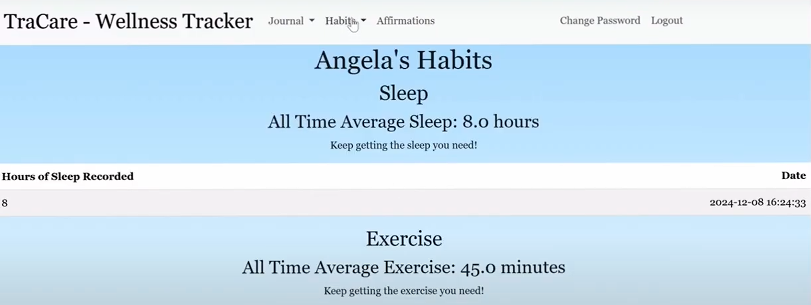
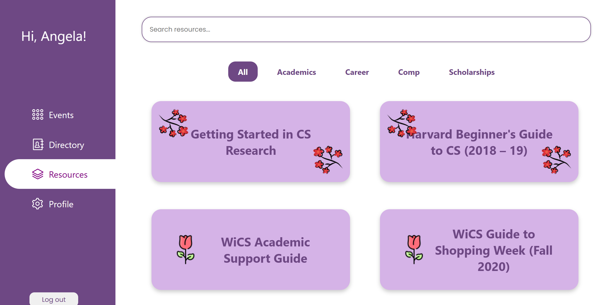

cs50 final project: tracare
well-being and habit tracker, journaling tool

harvard women in computer science (wics) portal
centralized location for wics members to get and share info.
rfk human rights ux designs
Short description of Card Three.